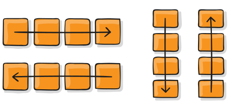

-
Nome:
-
GitHub:
GabListeM
Linkedin:
Biel Cavalcante
PROPRIEDADES PARA O ELEMENTO-PAI
FLEX-DIRECTION
Estabelece o eixo principal, definindo assim a direção em que os flex items são alinhados no flex container.
PROPRIEDADES PARA ELEMENTOS-FILHOS
ORDER

Por padrão os flex items são dispostos na tela na ordem do código. Mas a propriedade order controla a ordem em que aparecerão no container.
FLEX-WRAP

Por padrão, os flex items vão todos tentar se encaixar em uma só linha. Com esta propriedade você pode modificar esse comportamento e permitir que os ítens quebrem para uma linha seguinte conforme for necessário
FLEX-GROW

Define a habilidade de um flex item de crescer, caso necessário. O valor dessa propriedade é um valor numérico sem indicação de unidade, que serve para cálculo de proporção. Este valor dita a quantidade de espaço disponível no container que será ocupado pelo item. Se todos os ítens tiverem flex-grow definido em 1, o espaço remanescente no container será distribuído de forma igual entre todos.
FLEX-FLOW
A propriedade flex-flow é uma propriedade shorthand (uma mesma declaração inclui vários valores relacionados a mais de uma propriedade) que inclui flex-direction e flex-wrap. Determina quais serão os eixos pricipal e transversal do container. O valor padrão é row nowrap.
FLEX-SHRINK
Define a habilidade de um flex item de encolher, caso necessário.
FLEX-BASIS
Define o tamanho padrão para um elemento antes que o espaço remanescente do container seja distribuído. Pode ser um comprimento (por exemplo, 20%, 5rem, etc) ou uma palavra-chave.
JUSTIFY-CONTENT

Esta propriedade define o alinhamento dos ítens ao longo do eixo principal. Ajuda a distribuir o espaço livre que sobrar no container tanto se todos os flex items em uma linha são inflexíveis, ou são flexíveis mas já atingiram seu tamanho máximo.
FLEX
Esta é a propriedade shorthand para flex-grow, flex-shrink e flex-basis, combinadas. O segundo e terceiro parâmetros (flex-shrink e flex-basis) são opcionais. O padrão é 0 1 auto, mas se você definir com apenas um número, é equivalente a 0 1. É recomendado que você utilize esta propriedade shorthand ao invés de definir cada uma das propriedades em separado. O shorthand define os outros valores de forma inteligente.
color: rgb(107, 107, 231);ALIGN-ITEMS

define o comportamento padrão de como flex items são alinhados de acordo com o eixo transversal (cross axis). De certa forma, funciona de forma similar ao justify-content, porém no eixo transversal (perpendicular ao eixo principal).
ALIGN-SELF

Permite que o alinhamento padrão (ou o que estiver definido por align-items) seja sobrescrito para ítens individuais.
ALIGN-CONTENT

Organiza as linhas dentro de um flex container quando há espaço extra no eixo transversal, similar ao modo como justify-content alinha ítens individuais dentro do eixo principal.
Importante: Esta propriedade não tem efeito quando há somente uma linha de flex items no container.